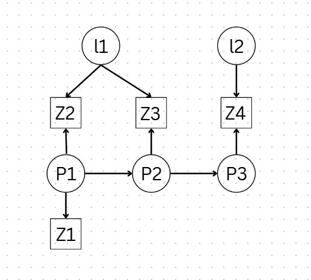
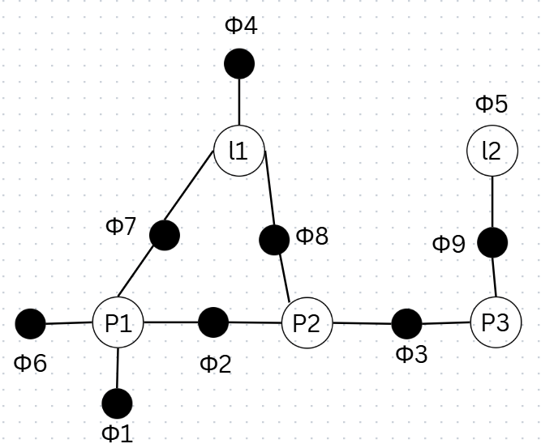

Visualizing Factor Graphs
1 The unknowns
We’re solving for a state vector containing both robot poses and landmarks:
\[ \mathbf{x} = \begin{bmatrix} P_1 \\ P_2 \\ P_3 \\ l_1 \\ l_2 \end{bmatrix} \]
where \(P_i\) are robot poses at different times and \(l_i\) are landmark positions.
2 Known vs. unknown
The measurements are what’s “known” — but here’s the key idea that trips people up at first: every measurement carries uncertainty. A LiDAR scan doesn’t tell you “the wall is exactly 3.000m away.” It tells you “the wall is probably around 3m away, plus or minus some noise.”
That uncertainty is why SLAM is fundamentally a probability problem, not a geometry problem.
The robot never knows — it only believes.
This isn’t just a nice turn of phrase — it’s the mathematical foundation of the whole field. The robot maintains a belief: a probability distribution over where it might be, not a single certain answer.
3 Why probabilities must sum to one
\[ \int p(x)\,dx = 1 \]
This says: all possibilities sum to 1. In plain terms — the robot must exist somewhere. Its belief might be spread out and uncertain, but that uncertainty is distributed over the full space of possibilities, and it always adds up to total certainty that some pose is the true one.
This single constraint is what turns “the robot is confused about its position” into something we can actually compute with.
4 The State Vector
Everything SLAM is trying to solve for lives in one big state vector, stacking robot poses and landmark positions together:
\[ \mathbf{x} = \begin{bmatrix} P_1 \\ P_2 \\ P_3 \\ l_1 \\ l_2 \end{bmatrix} \rightarrow \begin{bmatrix} x_1 \\ y_1 \\ \theta_1 \\ x_2 \\ y_2 \end{bmatrix} \]
Each pose is \([x, y, \theta]\), and each landmark is \([x, y]\). Note that this is a vector, not a matrix — a flat list of all the unknowns concatenated together.
This matters because it tells you how the optimization actually works: it doesn’t solve for the robot’s path first and then the map, or vice versa. It solves for every unknown at once, jointly.
5 The Posterior Distribution
The quantity we actually care about is:
\[ p(x \mid z) \Rightarrow P(\text{pose} \mid \text{measurements}) \]
In words: given everything the sensors have measured, what’s the probability distribution over where the robot actually is (and where the landmarks actually are)?
6 Why Factor Graphs?
The core idea is deceptively simple: draw constraints as nodes. Instead of writing one huge joint probability expression, we represent each piece of evidence — each measurement, each motion step — as its own node in a graph. This turns an intractable-looking equation into something structured and sparse.
7 Bayesian Networks
Bayesian networks represent joint probability — but the trick is they don’t store it as one giant function. Instead, they exploit conditional independence to break it into small, manageable pieces.
For example, take three variables \(a\), \(b\), \(c\). If the dependency chain is \(A \to B \to C\), then instead of needing the full joint distribution, we can factor it as:
\[ P(a,b,c) = P(a) \cdot P(b \mid a) \cdot P(c \mid b) \]
This is the whole reason factor graphs are tractable at all — most variables in SLAM don’t directly depend on most other variables, so we never need to compute anything close to the full joint distribution.
7.1 Applying this to our state vector
The same logic applies directly to \(p(x \mid z)\). By Bayes’ rule:
\[ p(x \mid z) \propto p(z \mid x) \cdot p(x) \]
Expanding over all our poses, landmarks, and measurements:
\[ \begin{aligned} p(x \mid z) \;\propto\;\; & p(z_1,z_2,z_3,z_4 \mid P_1,P_2,P_3,l_1,l_2) \\ & \cdot\, p(P_1,P_2,P_3,l_1,l_2) \end{aligned} \]
Given the dependency structure — where \(P_1 \to P_2 \to P_3\) form the trajectory, and \(l_1, l_2\) are landmarks observed at different points along it — this factors into:
\[ \begin{aligned} p(x \mid z) \;\propto\;\; & p(P_1) \cdot p(l_1) \cdot p(l_2) \\ & \cdot\, p(P_2\mid P_1) \cdot p(P_3\mid P_2) \\ & \cdot\, p(z_1\mid P_1) \cdot p(z_2\mid P_1,l_1) \\ & \cdot\, p(z_3\mid P_2,l_1) \cdot p(z_4\mid P_3,l_2) \end{aligned} \]
Every term in that product corresponds to one measurement or one motion step. Nothing here is arbitrary — it falls directly out of which variables were involved in producing which observation.
7.2 From Bayesian network to factor graph
Here’s the structure before and after the transformation:
Bayesian network (directed, showing dependency direction):

Factor graph (undirected, showing which variables a constraint touches):

- Unary factors (priors): \(\phi_1(P_1)\), \(\phi_4(l_1)\), \(\phi_5(l_2)\)
- Motion factors: \(\phi_2(P_2,P_1)\), \(\phi_3(P_3,P_2)\)
- Observation factors: \(\phi_6(P_1)\), \(\phi_7(P_1,l_1)\), \(\phi_8(P_2,l_1)\), \(\phi_9(P_3,l_2)\)
The shift from Bayesian network to factor graph is really a shift in what the nodes mean. In the Bayesian network, arrows encode causal or conditional direction. In the factor graph, we drop the directionality and instead ask: which variables does this one constraint touch?
8 What a Factor Graph Actually Is
A factor graph is a graph that represents the factorization of a function.
A factor is just a function that says how compatible a set of variables is with one measurement. Every factor corresponds to one constraint — one measurement, one prior, one motion estimate.
The graph has exactly two kinds of nodes:
- Variable nodes (circles) — poses and landmarks, the things we’re solving for
- Factor nodes (squares) — constraints, the evidence tying variables together
Because edges only ever connect a variable node to a factor node (never variable-to-variable or factor-to-factor), this makes it a bipartite graph. That bipartite structure is what keeps the whole system sparse and efficient to optimize — most variables only touch a handful of factors, not all of them.
9 Types of Factors
Two flavors of constraint show up constantly in a factor graph:
- \(\phi(P_1)\) — a unary constraint, or prior. It involves just one variable, expressing a belief about it in isolation (e.g., “the robot starts near the origin”).
- \(\phi(P_2, P_1)\) — a binary constraint, or between factor. It ties two variables together (e.g., “the robot moved this much between these two poses”).
10 Why Sparsity Matters
Here’s the property that makes factor graphs practical at scale: they’re sparse. Most nodes never connect to each other. A landmark observed early in a trajectory has no direct relationship to a pose visited much later — they only become linked indirectly, through the chain of poses in between. This makes sparsity one of the most important properties of the whole system.
Formally, a factor graph is a tuple:
\[ F = (U, V, E) \]
where \(U\) = factor nodes, \(V\) = variable nodes, and \(E\) = edges. The whole factorized function is just the product over all factors:
\[ \phi(x) = \prod_i \phi_i(x_i) \]
This sparsity is why SLAM problems with thousands of poses and landmarks are still solvable in real time — the underlying linear systems end up being sparse matrices, and sparse solvers scale far better than dense ones.
11 Why We Need Iteration
Non-linear equations can’t be solved in one shot the way linear ones can. There’s no closed-form inverse waiting for us. So instead, we reach for iterative algorithms like Gauss-Newton or Levenberg-Marquardt (LM).
It’s worth sitting with this idea before diving into the mechanics:
No individual factor solves the problem. The solution comes from the collective agreement of all factors.
Every factor pulls the estimate toward what it believes is true, and the final solution is wherever all of these competing pulls settle into balance.